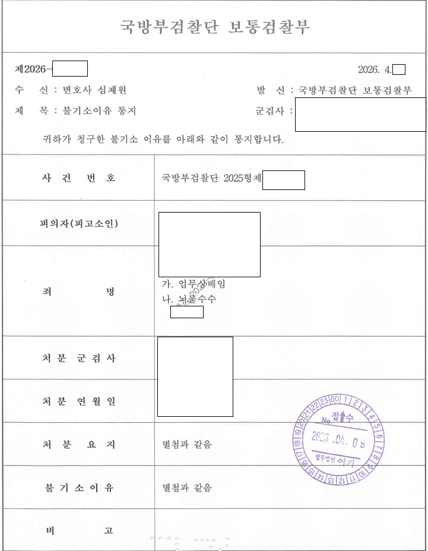
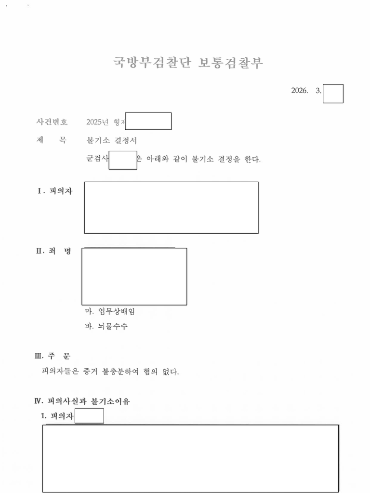
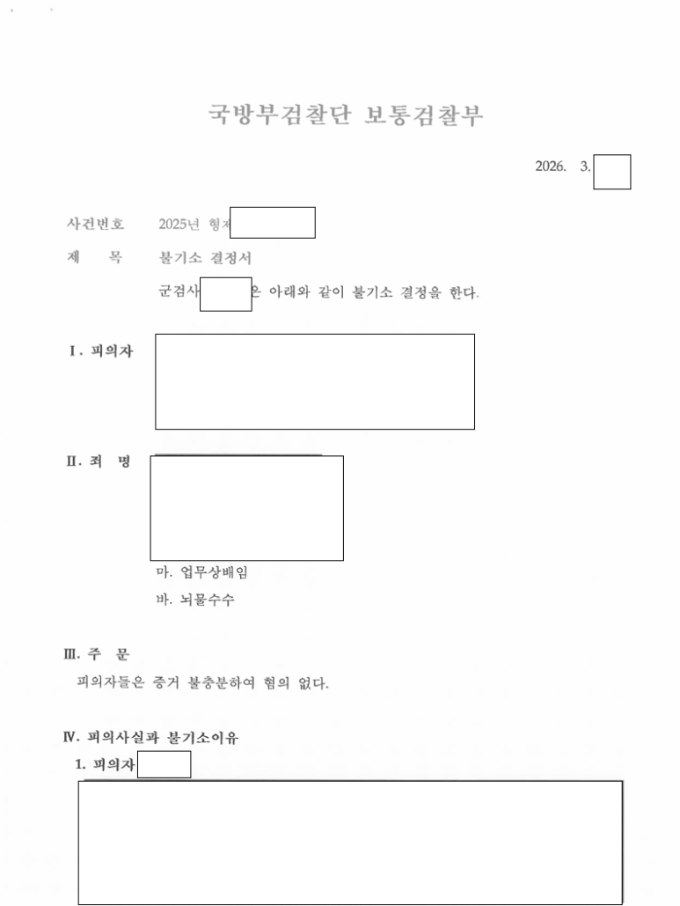

01사건 개요
업체 내부자의 폭로로 시작된 사건입니다. 군용물품을 수리하지 않았는데 예산이 지출됐다는 업무상배임, 업체에게서 장비를 받았다는 뇌물수수 혐의였습니다. 국방부조사본부가 휴대폰과 차량을 압수수색했습니다.
02쟁점
- 업체 내부 사정을 의뢰인이 알 수 있었는지
- 제보자 진술에만 의존한 수사를 어떻게 바로잡을지
03변호사가 한 일
- 여러 차례의 휴대폰 디지털포렌식에 모두 참여했습니다.
- 조사가 늦어져 불안해하는 의뢰인에게 진행 상황을 계속 설명했습니다.
- 증거를 바탕으로 장문의 의견서를 제출했고, 국방부검찰단 조사 후 추가 의견서와 증거를 냈습니다.
04결과
약 2년 만에 업무상배임과 뇌물수수 모두 혐의없음 처분을 받았습니다.



이 사례는 원문을 요약해 정리한 것입니다. 사건 경과와 판결문 등 전체 내용은 로톡에 게시된 원문에서 볼 수 있습니다.
로톡에서 전문 보기 →05비슷한 상황이라면
압수수색을 받았거나 수사기관이 내 설명을 듣지 않는다고 느껴진다면, 포렌식 단계부터 변호인이 함께해야 합니다.
국방부조사본부에서 압수수색을 당했습니다. 변호사가 무엇을 해 주나요?
피의자 조사와 휴대폰 디지털포렌식에 함께 참여해 진술 방향을 정리하고 압수 범위를 확인합니다. 압수수색으로 시작된 업무상배임·뇌물수수 사건에서 2년간 대응해 혐의없음 처분을 받은 사례가 있습니다.
군에서 입건됐는데 전역하면 사건은 어떻게 되나요?
전역하면 사건은 민간 검찰로 이송됩니다. 기소 전에 검사실에 연락해 합의와 의견서 제출 시간을 확보하는 것이 중요합니다. 전역 후 상관모욕 사건에서 혐의없음, 선고유예를 받은 사례가 있습니다.
상관에게 욕을 했으면 무조건 상관모욕죄로 처벌받나요?
아닙니다. 법원은 무례하거나 경미한 수준의 표현은 모욕에 해당하지 않는다고 엄격하게 판단합니다. 상관모욕 사건에서 군사법원 무죄 판결 후 군검사의 항소를 서울고등법원이 기각해 무죄가 확정된 사례가 있습니다.
평일 09:00–18:00 변호사가 직접 전화를 받습니다.
재판으로 자리에 없는 경우 로톡으로 상담을 신청하시거나 이메일로 문의해 주세요.
의뢰인이 특정되지 않도록 사실관계를 일부 줄이거나 바꾸어 정리했습니다. 사건의 결과는 구체적인 사실관계와 증거에 따라 달라질 수 있으며, 같은 결과를 보장하지 않습니다.